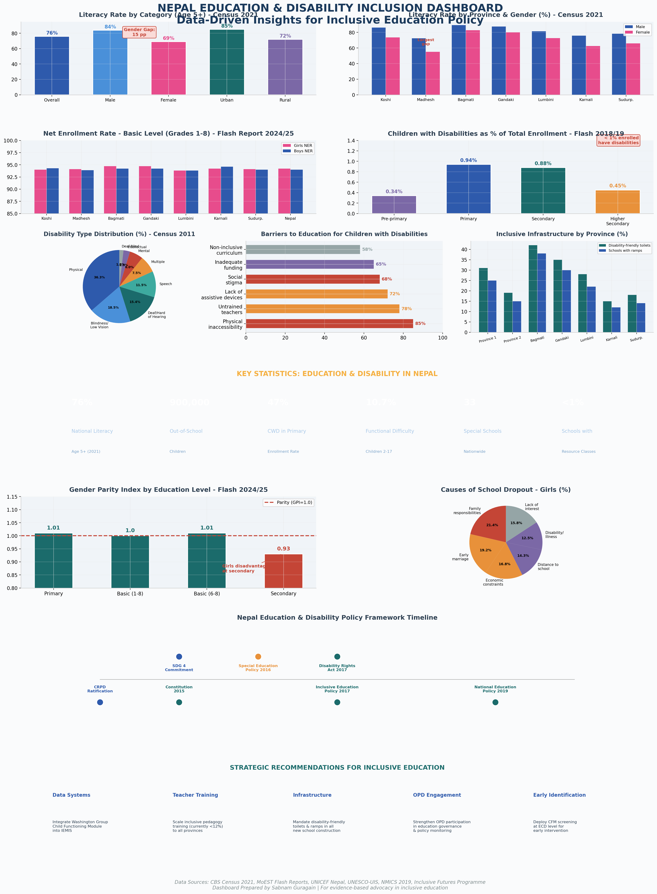
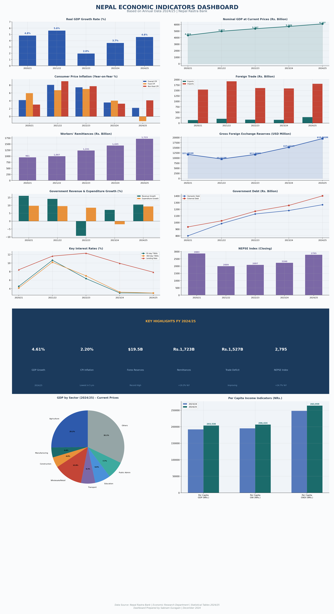

I turn public data into evidence that serves people. I run the full monitoring, evaluation, accountability and learning cycle for humanitarian programmes, and I build the interactive dashboards that make invisible populations visible, especially children with disabilities.
02 About
I am a MEAL Officer at Volunteer Corps Nepal, working across Start Fund Network emergency responses and the 2026 Rasuwa & Nuwakot flood response. My background is a BSc in Environmental Science, and I taught myself Python, SPSS and advanced Excel to go further than reporting, to analysis that changes decisions.
The projects below are independent work. I gathered official statistics from Nepal Rastra Bank, the Census, MoEST, UNICEF and UNESCO, structured them, and vibe-coded live interactive dashboards with Claude Code. Each one is its own page, so you can open and share it on its own.
03 Experience
04 Projects
Each project is a standalone interactive page with live charts you can hover and explore.

Where do children with disabilities disappear from the education data, and why? Literacy, enrolment, barriers and gender parity.

Is Nepal's economy strengthening? Five years of GDP, inflation, trade, remittances, reserves, rates and the capital market.
05 Capabilities
KoboToolbox and ODK form design with skip logic and validation, enumerator briefing, and live submission monitoring so errors are caught in the field.
Cleaning and verification against source records, beneficiary databases and indicator tracking, so every figure traces back to its origin.
SPSS (descriptive stats, cross-tabulation, chi-square, correlation), advanced Excel, and Python (pandas, numpy) for multi-source analysis.
Interactive dashboards and web apps, vibe-coded and deployed with agentic AI tooling such as Claude Code, turning raw data into something anyone can explore.
I use agentic AI tooling, including Claude Code, day to day to write, debug and deploy data tools, which lets one person build and host what used to take a team. This whole portfolio is an example.
06 Education & training
Research methodology and statistical data analysis, database management systems, environmental impact assessment, disaster risk reduction, climate change adaptation and community-based natural resource management, with field-based research training in survey design, sampling and reporting.
07 Get in touch
Open to MEAL, M&E and data roles in Nepal, or remote work from Nepal.